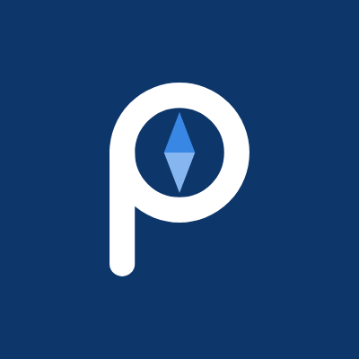
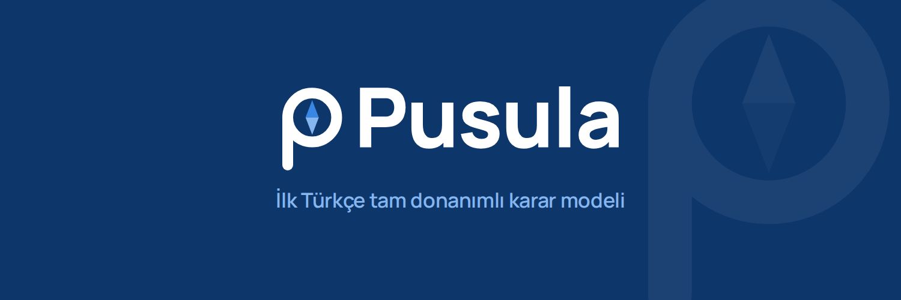
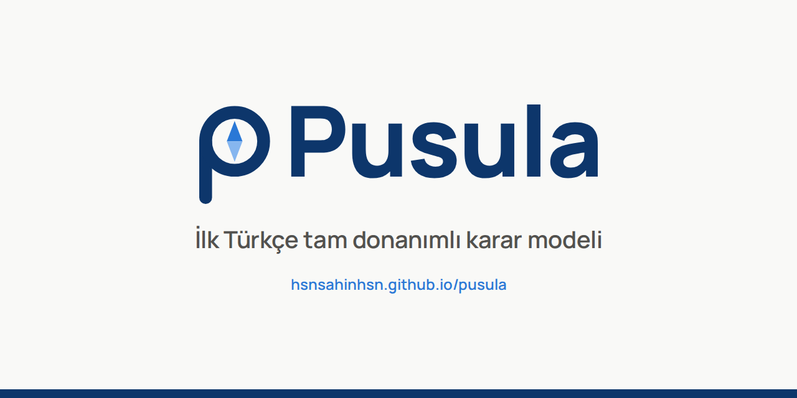

Marka seti · Brand kit
Pusula marka seti
Pusula logosu, renkleri ve sosyal medya görselleri bu sayfada toplanmıştır. Görseller, Pusula'yı
tanıtmak veya Pusula'ya atıfta bulunmak amacıyla kullanılabilir.
The Pusula logo, colors and
social media images are collected on this page. They may be used to present or refer to Pusula.
Logo · Logo
Simge, bir pusula iğnesi taşıyan "P" harfinden oluşmaktadır. Açık zeminlerde renkli logo, koyu
zeminlerde ters logo kullanılmalıdır.
The symbol is a letter "P" carrying a compass needle. Use
the color logo on light backgrounds and the reverse logo on dark backgrounds.


Renkler · Colors
Ana renk lacivert, vurgu rengi mavidir. Açık mavi yalnızca ikincil öğelerde kullanılır.
Navy is the primary color and blue is the accent. Light blue is used for secondary elements only.
Lacivert Navy#0D366B
Mavi Blue#2A78D6
Açık mavi Light blue#86B6EF
Mürekkep Ink#0B0B0B
Kâğıt Paper#F9F9F7
Yazı tipi · Typeface
Logodaki yazı Manrope ExtraBold (SIL Open Font License 1.1) ile çizilmiş ve vektöre
dönüştürülmüştür; bu nedenle logo, yazı tipi kurulu olmadan da aynı görünür. Sosyal medya görsellerinde Manrope
kullanılmaktadır.
The logotype is set in Manrope ExtraBold (SIL Open Font License 1.1) and
converted to outlines, so the logo renders identically without the font installed.
Kullanım kuralları · Usage
- Logonun çevresinde en az simgedeki halkanın yarıçapı kadar boş alan bırakılmalıdır. Keep clear space of at least the ring's radius around the logo.
- En küçük boyut: simge 16 piksel, logo 96 piksel genişlik. Minimum size: symbol 16 px, logo 96 px wide.
- Logo esnetilmemeli, döndürülmemeli, yeniden renklendirilmemeli ve gölge ya da efekt eklenmemelidir. Do not stretch, rotate, recolor or add shadows or effects.
- Logo, Apache 2.0 lisansının kapsamı dışındadır; Pusula'nın onaylandığı izlenimini veren kullanımlar yapılmamalıdır. The logo is not covered by the Apache 2.0 license; do not use it in a way that suggests endorsement.
Sosyal medya · Social media
Profil resmi kare olarak hazırlanmıştır ve daire biçiminde kırpıldığında da tam görünür.
The profile picture is square and remains complete when cropped to a circle.


